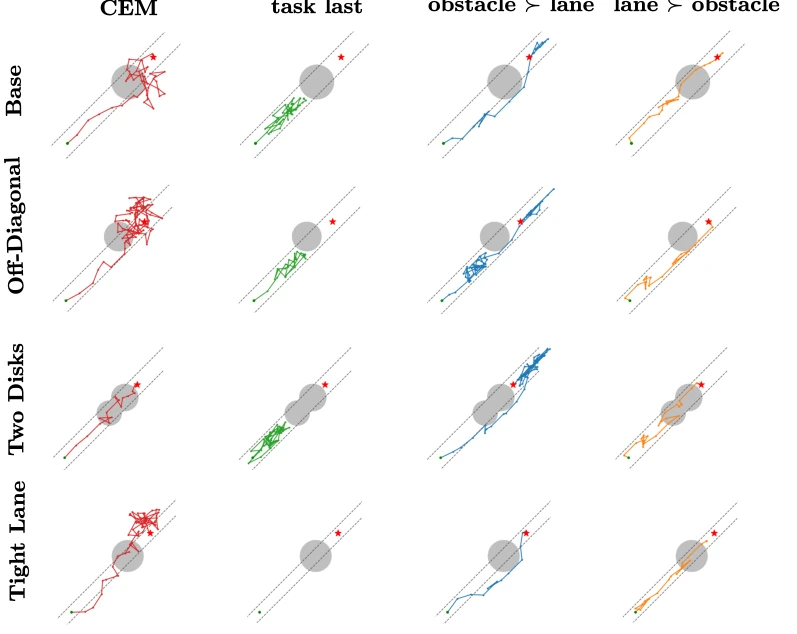
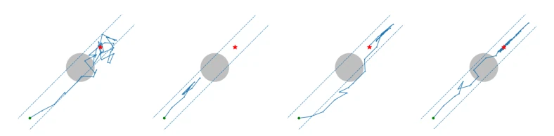
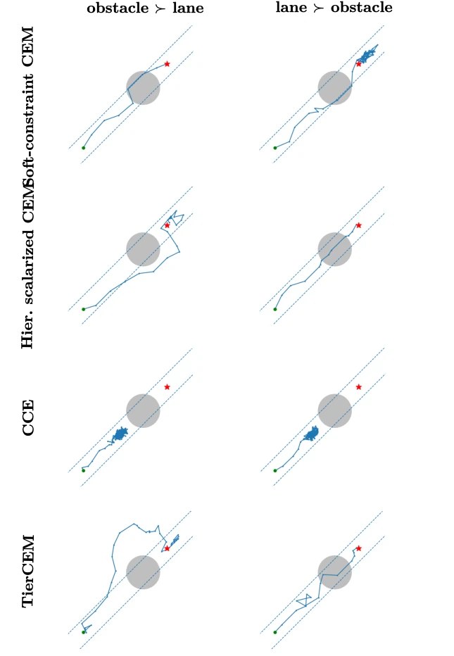
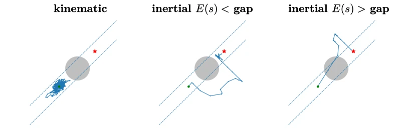
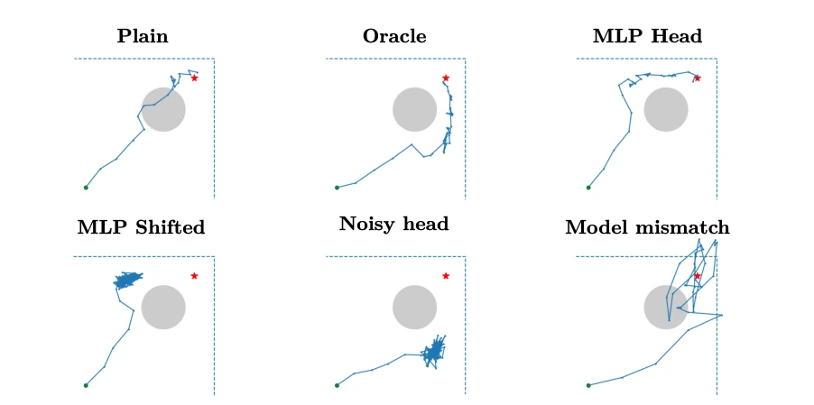
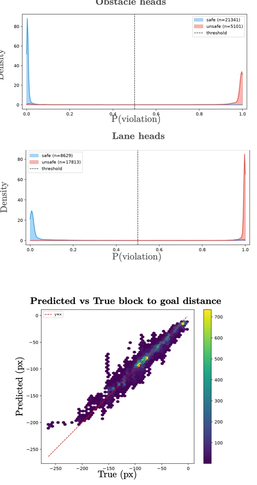
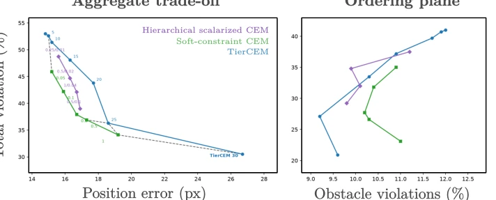

Cross-entropy optimization with prioritized constraints
Francisco Roldan Sanchez, Pau de las Heras Molins, David Fridovich-Keil, Georgios Bakirtzis abspdf
论文点评Review
这篇论文给 Cross-Entropy Method (CEM) 加了个“优先级过滤器”，叫 TierCEM。思路挺清晰：别搞那些玄学的权重调参了，直接按顺序筛。高优先级约束不满足？那就别动，低优先级的随便牺牲。这在逻辑上很性感，像交通法规里的“生命权大于通行权”。但吐槽点也很明显：它依赖 margin 函数的准确性，如果是 learned world model 预测错了，这“优先级”可能变成“盲盒”。而且对于惯性体（inertial bodies），如果停不下来，高优先级约束也可能被迫牺牲，这点论文自己承认了。总的来说，是个实用的工程改进，但别指望它能解决所有安全保证问题，部署到安全关键场景还得小心。
—
研究动机Motivation
核心痛点是当约束冲突时，优化器该保谁？现有方法多把约束转为标量惩罚项（scalarized objective），比如加权求和（Ma et al., 2022; Hu et al., 2023）。但这导致高优先级约束可能被低优先级的改进“抵消”，比如为了快一点撞墙（Censi et al., 2019）。要解决这个问题，需要校准权重，但这很难，尤其是约束尺度不同或数量多时（Imanov et al., 2026）。分层优化（Lexicographic optimization）虽然理论可行，但通常用于梯度法，采样法（如 CEM）缺乏直接支持。现有采样约束方法（如 CCE, Wen & Topcu, 2021）要么只保可行性不保任务，要么无法指定具体哪个约束该被牺牲。因此，需要一种在 CEM 精英选择阶段直接嵌入优先级逻辑的方法。
—

Figure 5. Visualization of trajectories for different constraint configurations: each row is a geometry, each column a configuration. The shaded disks are the obstacles, the dashed lines bound the lane are the lane boundary, the green point is the start and the red star is the goal. Across every geometry plain (first column) smashes through at least one constraint, task_last (second column) stalls preserving both, task_obstacle_lane (third column) arcs around the obstacle sacrificing the lane while the obstacle stays clean, and task_lane_obstacle (fourth column) drives straight sac- rificing the obstacle while the lane stays clean.
方法Method
TierCEM 整体流程基于标准 CEM 的迭代采样与精英更新，但在精英选择（Elite Selection）环节引入了“优先级松弛级联”（Priority-relaxation cascade）。Pipeline: 1. 采样：从高斯分布 N(μ, Σ) 生成候选轨迹 K。2. 过滤：按优先级 m1 ≻ m2 ≻ ... ≻ mN 依次筛选。若第 n 层过滤后集合 Kn 为空，说明当前批次无法同时满足前 n 个约束。3. 回退与排名：若发生空集，回退到上一层非空集合 Kn-1，以第 n 个约束的违反程度（margin mn）作为排名依据，选出违反最小的 ℓ 个精英。若所有层都非空，则按最低优先级约束的 margin 排名。4. 更新：用精英更新高斯分布参数。Innovation: 关键在于它不需要为每个约束分配权重，而是通过过滤顺序隐式定义优先级。它允许在无法全满足时，有控制地牺牲低优先级约束，同时严格保护高优先级约束。
—

Figure 2. Effect of the prescribed priority ordering in the two-dimensional navigation problem. When task progress has lower priority than the spatial constraints, TierCEM can preserve both by stalling. Prioritizing task progress forces a spatial constraint to relax; reversing the spatial ordering reverses whether the trajectory leaves the lane or crosses the forbidden region.
Figure 4. TierCEM and baselines execution in the Push-T scenario using DINO-WM latents. Frames progress from left to right. The red disk blocks the blue lane, the green T region is the goal, and the blue T is the block. TierCEM relaxes the lower-priority constraint to complete the task without requiring a per-constraint weight tuning as hierarchical CEM, CCE preserves safety without progressing toward the goal, and the Soft-Constraint CEM does not have any mechanism to prioritize one constraint over the other.

Figure 6. The soft-constraint baseline versus the lexicographic cascade on the mech- anism analysis environment (rows: Soft-constraint CEM at λ = 0.5, the hierarchical scalarized CEM at the tuned 25:1 ratio of Table 9, the Constrained Cross Entropy (CCE), and TierCEM; columns: the two tier orders). The Soft-Constraint CEM car- ries a single scalar weight and cuts the forbidden disk (negative min_obs); TierCEM protects the higher-priority tier and sacrifices only the lower one. The hierarchical scalarized CEM, given per-constraint weights in the correct 25:1 ratio, also protects the higher-priority tier at this seed, but the ratio that achieves this must be tuned per environment whereas TierCEM encodes the ordering directly. CCE stalls to a safe state but never completes the task.
其他图片Other Figures

Figure 7. The kinematic control never reaches the goal (left), meaning no tier ever empties and, therefore, the planner stalls and both geometry constraints stay positive. The inertial body sacrifices the lane constraint in order to complete the goal (center), unless the gap between the starting point and the obstacle is too narrow for the initial speed s (right).

Figure 8. Imperfect constraint signals. plain cuts through the disk; oracle and mlp_head reach the goal safely; mlp_shifted and noisy_head stall short, hallucinat- ing phantom unsafe regions; model_mismatch plans a safe arc but the executed path clips the disk and goes outside the workspace boundary occasionally.

Figure 9. First two rows: resulting KDE of the MLP prediction for the forbidden disk and the lane boundary; third row: the predicted block to goal distance versus the true block to goal distance.

Figure 11. Pareto presentation of the Push-T sweeps of Tables 14, 15, and the obstacle as highest priority column of 16 (means over 100 episodes across 5 random seeds). These results do not use OOD detection. (a) Total violation rate against position error, the dashed step line is the Pareto front. (b) The same sweeps in the ordering plane.